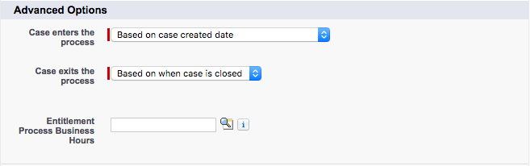

Entitlement processes are where you finally take your defined SLAs and turn them into something actionable. The determine how the case will behave while under it's influence.

As part of the creation of a new entitlement process, you can define when your process case enters the process
Based on case created date &ldash; This is when the case is created. Typically, this is the option you would use
Based on a custom date/time field on the case &ldash; This allows you to choose a field on the case to use. This is useful if your entitlement process does not start until after an action occurs. For example if a case must be vetted then a datetime field is set starting the process
You can also set when the case exits this process
Based on when the case is closed &ldash; Again, this is typically the option you would choose
Based on custom criteria &ldash; This allows you to set custom criteria for when the process exits. This is useful for you consider a case resolved based on something other than the case's status. For example if a solution is verified or a knowledge article is written
When a entitlement process exits, it does not mark any in-progress milestones as completed. For this to happen you will have to add a custom trigger
Exercise 3: Create Entitlement Processes and Milestones
Goal:
Create case milestones and create entitlement processes.
Scenario:
Your support organization offers Premium and Standard levels of support based on the table below.
High
Normal
Premium
First Response
1 Hour
6 Hours
Case Closure
2 Business Days
6 Business Days
Standard
First Response
4 Business Hours
12 Business Hours
Case Closure
4 Business Days
8 Business Days
Tasks:
Create the First Response and Case Closure milestones
Create Premium and Standard entitlement processes
Add case milestones to meet your expected response times